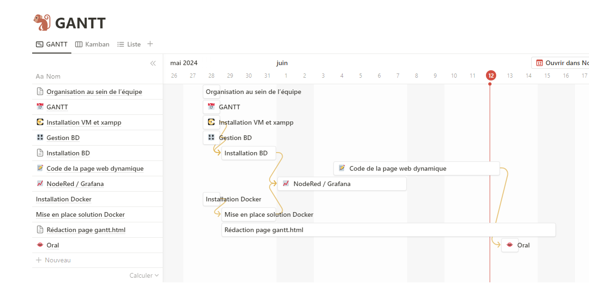

Diagramme de GANTT du projet

Ma partie de projet visait à créer une solution de surveillance en utilisant Grafana et Node-RED, déployés via des conteneurs Docker, pour récupérer des informations depuis un broker MQTT. Les principales étapes comprenaient l’installation de Docker pour gérer les conteneurs, la configuration de Grafana pour visualiser les données et l’implémentation de Node-RED pour la récupération et le traitement des données.
Node-RED a été configuré pour se connecter au broker MQTT et récupérer les informations nécessaires. Ensuite, des flux ont été développés pour traiter ces données et les formater correctement. Ces données traitées ont été intégrées dans Grafana pour permettre leur visualisation en temps réel à travers des tableaux de bord personnalisés.
Grâce aux travaux pratiques fournis, je n’ai rencontré aucun problème majeur lors de la réalisation de cette solution. Les instructions et les guides détaillés ont permis de configurer facilement les environnements et d’assurer une intégration fluide entre Node-RED, le broker MQTT et Grafana.
Le projet a largement répondu aux exigences du cahier des charges. Les objectifs principaux de récupération des informations depuis un broker MQTT avec Node-RED et leur visualisation via Grafana ont été atteints avec succès. Les tableaux de bord Grafana fournissent une visualisation claire et en temps réel des données, et les flux Node-RED automatisent efficacement la récupération et le traitement des informations. Grâce à l’efficacité des travaux pratiques et aux guides détaillés, la mise en place s’est déroulée sans encombre. Le degré de satisfaction est évalué à 9/10, avec des fonctionnalités répondant pleinement aux besoins et des interfaces conviviales.
Ma tâche dans ce projet consistait à réaliser des pages html et leur css pour le site web, puis d’y insérer des scripts php et des formulaires reliées à la base de donnée afin d’y écrire // lire les valeurs dans le site web.
Lors de la mise en place des liens pour accéder aux différentes pages PHP, il y avait un problème où le navigateur téléchargeait le code source au lieu de l’exécuter. Ce problème était dû à une mauvaise configuration du serveur web (Apache) pour traiter les fichiers PHP.
Une erreur courante était l’utilisation incorrecte des variables de session, notamment l’erreur "undefined variable: _SESSION".
L’inclusion correcte de `session_start()` en haut des fichiers PHP concernés et la vérification que les sessions sont initialisées
et utilisées de manière cohérente tout au long des scripts ont résolu ce problème.
La récupération et l’affichage dynamiques des données des capteurs dans les pages web étaient un défi, surtout pour s’assurer que les dernières données de chaque capteur sont affichées correctement.
- La connexion et la déconnexion des utilisateurs fonctionnent correctement.
- Les pages de gestion et d’administration permettent d’ajouter, de supprimer et d’afficher des données de manière dynamique.
- Les données des capteurs sont affichées en temps réel avec des mises à jour automatiques.
- Quelques fonctionnalités mineures ou améliorations de l’interface utilisateur pourraient encore être optimisées.
- Des tests supplémentaires pourraient être effectués pour s’assurer que toutes les fonctionnalités fonctionnent sans erreur dans divers scénarios d’utilisation.
Le cahier des charges a été rempli à plus de 90%. Les principales fonctionnalités ont été mises en place et fonctionnent correctement. Les problèmes rencontrés ont été résolus de manière efficace, et les solutions mises en œuvre ont permis d’atteindre les objectifs définis. Le projet est donc considéré comme un succès avec quelques ajustements mineurs possibles pour atteindre une perfection totale.